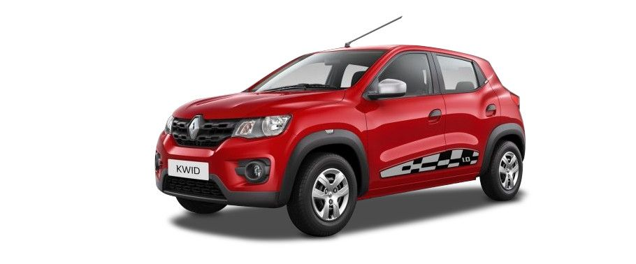
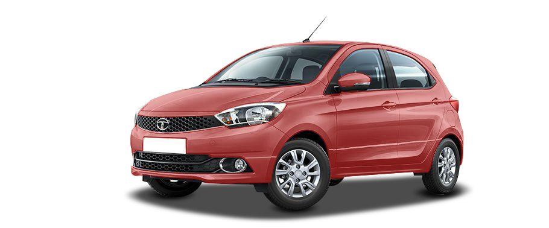
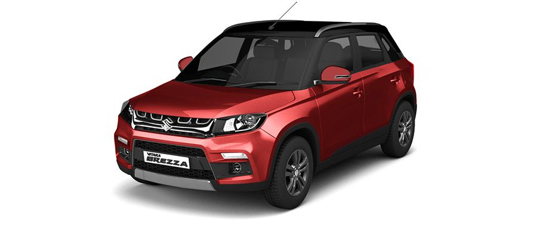
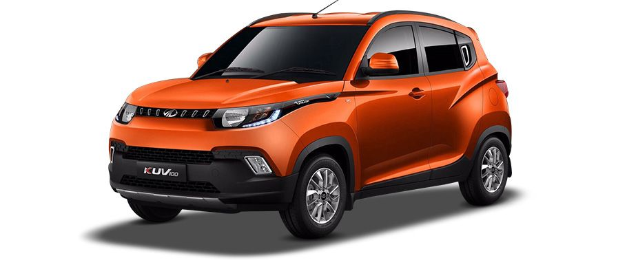
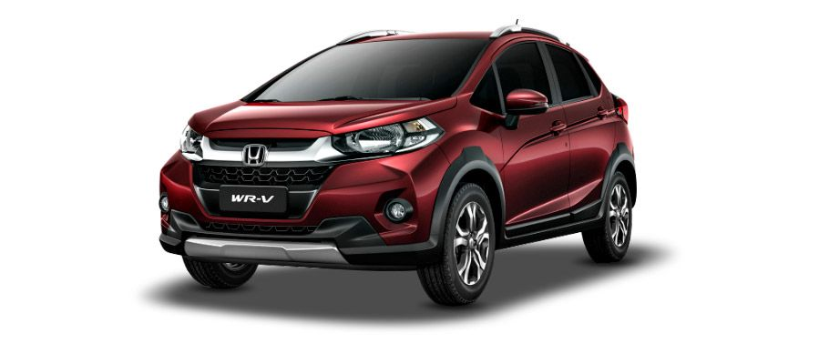

Automobile.com

Popular Cars
Renault GO

The Renault Kwid is currently priced between Rs 2.61-3.74 lakh* for the 0.8-litre versions and Rs 3.49-4.24 lakh* for the 1.0-litre versions. You can also opt for the Renault Kwid Climber, a cosmetically-enhanced version of the Renault Kwid 1.0L that is based on the range-topping RxT (O) variant. This version of the Renault Kwid is priced at Rs 4.20 lakh* for the MT variant and Rs 4.49 lakh* for the AMT model
Datsun Redi GO

The Datsun redi-GO 1.0L uses the same engine as the Renault Kwid 1.0L i.e. a 3-cylinder, 999cc engine that produces 68PS of power and 91Nm of torque. As per ARAI’s new test cycle, it offers a mileage of 22.5kmpl. For reference, the redi-GO 0.8, which uses a 799cc, 3-cylinder engine delivering 54PS/72Nm, delivers a claimed mileage of 22.7kmpl.
Upoming Cars
Ford Figo

Ford introduced the Sportier ‘S’ version of the hatchback, the Ford Figo S, in April 2017. The Ford Figo Sports features a retuned suspension setup and bigger tyres for relatively better handling and stability, while mechanically, it remains the same. Also on offer are go-fast aesthetic additions such as a new mesh grill, dual-tone paint schemes, decals and red interior upholstery stitching and leather wrapped steering wheel.
Hyundai Grand i10

The biggest update that the Grand i10 received was under the hood. The diesel engine was upgraded from a 1.1-litre configuration to a 1.2-litre. As expected, the increase in cubic capacity resulted in more power. The new engine produces 75PS of power and 190Nm of torque. The 1.2-litre petrol engine, on the other hand, remains identical and produces 83PS/114Nm.
Renault KWID

The Renault Kwid is currently priced between Rs 2.61-3.74 lakh* for the 0.8-litre versions and Rs 3.49-4.24 lakh* for the 1.0-litre versions. You can also opt for the Renault Kwid Climber, a cosmetically-enhanced version of the Renault Kwid 1.0L that is based on the range-topping RxT (O) variant. This version of the Renault Kwid is priced at Rs 4.20 lakh* for the MT variant and Rs 4.49 lakh* for the AMT model (*all prices mentioned are ex-showroom Delhi). The Renault Kwid is available in the following variants – STD, RxE, RxL, RxT and RxT (O). While the 0.8-litre engine option is available in all the variants, the 1.0-litre engine is offered only in the top three variants.
The Renault Kwid 0.8L is powered by a 799cc, 3-cylinder engine that makes 54PS and 72Nm of torque, and delivers a claimed mileage of 25.17kmpl. The Renault Kwid 1.0L is powered by a 999cc, 3-cylinder engine that makes 68PS of power and 91Nm of torque, and delivers a claimed mileage of 23.01kmpl. While a 5-speed manual gearbox comes as standard, the Renault Kwid 1.0L can be had with a 5-speed automated manual transmission (AMT) as well (available with RxL, RxT (O) and Climber). The AMT versions deliver a claimed mileage of 24.04kmpl.
Rs 2.88 Lakh
Buy Now
Tata Tiago

Tata Motors launched the Tiago with an automated manual transmission in March, 2017. Labelled the Tiago "Easy-Shift" AMT, it was introduced in the top-end XZA petrol variant. Tata has now added another automatic variant in the Tiago line-up - XTA variant. The Tiago AMT gets the same 1.2-litre, three-cylinder engine as the manual Tiago.
The Tata Tiago is offered in both, diesel and petrol avatars. While both engines come with a 5-speed manual transmission as standard, only the petrol is available with a five-speed AMT. The diesel is a 1.05-litre unit (70PS/140Nm), while the petrol is a 1.2-litre engine (85PS/114Nm). The Tiago delivers a claimed mileage of 23.84kmpl and 27.28kmpl for the petrol and diesel, respectively.Rs 5.80 Lakh
Buy Now
Maruti Vitara Brezza

The first sub-four meter SUV from Maruti Suzuki, the Vitara Brezza comes with just one engine option – the 1.3-litre DDiS200 diesel, which returns a class-leading mileage of 24.3kmpl as per ARAI. The 1.3-litre diesel engine produces 90PS of power and 200Nm of torque and is coupled to a 5-speed manual transmission.
The Maruti Vitara Brezza comes with Suzuki’s SmartPlay touchscreen infotainment system which has integrated navigation, Apple CarPlay and MirrorLink system. Also, the compact SUV has different-coloured illuminated dials, push button start/stop and an automatic climate control. It is available in seven different variants. Maruti has also introduced the ‘iCreate’ customisation kits for the Vitara Brezza. Prices for the same range between Rs 18,000-30,000. The packages include cosmetic upgrades inside out, with a total of three options available – Sports, Urban Dynamic and Glamour. The Vitara Brezza competes with other compact SUVs like the Ford Ecosport, Mahindra NuvoSport and the upcoming Tata Nexon.
Rs 9.88 Lakh
Buy Now
Mahindra KUV100

Mahindra incorporated a few design elements to the K8, K6+ and K6 variants of the KUV100. The K8 variant is now available with two options for dual-tone body paint - Flamboyant Red or Dazzling Silver body colour with a metallic black roof. Moreover, the 14-inch alloy wheels have been ditched for larger 15-inch ones and the interior is now draped with an all-black sporty theme. The K6+ and K6 variants now come equipped with 14-inch alloy wheels as part of the standard kit.
The Mahindra KUV100 is powered by 1.2-litre 3-cylinder petrol and diesel engines. The petrol puts out 83PS/115Nm, while the diesel produces 78PS/190Nm. Both the engines are mated to a 5-speed manual transmission. The KUV100 delivers a claimed mileage of 18.15kmpl and 25.32kmpl for the petrol and diesel models, respectively.
Rs 9.88 Lakh
Buy Now
Honda WRV

Honda launched its first sub-4-metre crossover, the WRV, in March 2017. The WR-V is based on the same platform as the Jazz, which is also shared with the City. It also shares its several body panels and mechanicals with the hatch – the 1.2-litre i-VTEC petrol and the 1.5-litre i-DTEC diesel motor. The WRV's petrol motor comes paired with a five-speed manual transmission, while the diesel offers a six-speed manual unit. Unlike the Jazz, it doesn't offer the CVT automatic option with its petrol engine.
Honda WRV mileage figure is claimed to be 25.5kmpl for the diesel and 17.5kmpl for the petrol. The WRV's interior is similar to the Jazz's, but there are subtle differences in terms of features such as it gets the same 7.0-inch infotainment system (Digipad) that made its debut with the facelifted City, new central armrest, sunroof, cruise control and others. The Honda WRV has slightly larger dimensions and rides higher off the ground as well compared to the Jazz. The WRV is available in six colours with Premium Amber being an all-new one, and comes in just two variants (S and VX).
Rs 7.33 Lakh
Buy Now
Datsun Redi GO
The Datsun redi-GO 1.0L uses the same engine as the Renault Kwid 1.0L i.e. a 3-cylinder, 999cc engine that produces 68PS of power and 91Nm of torque. As per ARAI’s new test cycle, it offers a mileage of 22.5kmpl. For reference, the redi-GO 0.8, which uses a 799cc, 3-cylinder engine delivering 54PS/72Nm, delivers a claimed mileage of 22.7kmpl.
The Datsun redi-GO is available in 5 variants – D, A, T, T (O) and S. Prices start at Rs 2.41 lakh* and go up to Rs 3.72 lakh*. Datsun also introduced a limited edition redi GO Sport variant (0.8L only) that comes with black wheels and racing stripes, along with additional features like rear parking sensors, keyless entry and a Bluetooth enabled music system. This variant is priced at Rs 3.63 lakh* (*all prices ex-showroom pan-India).